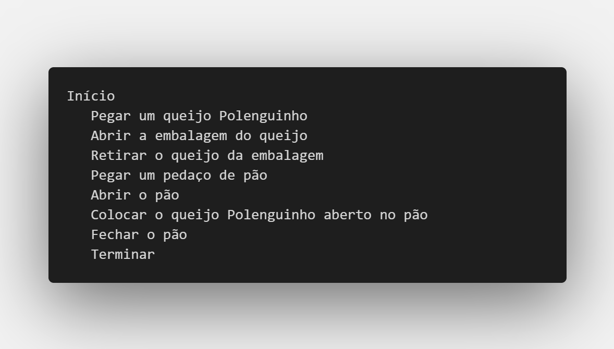
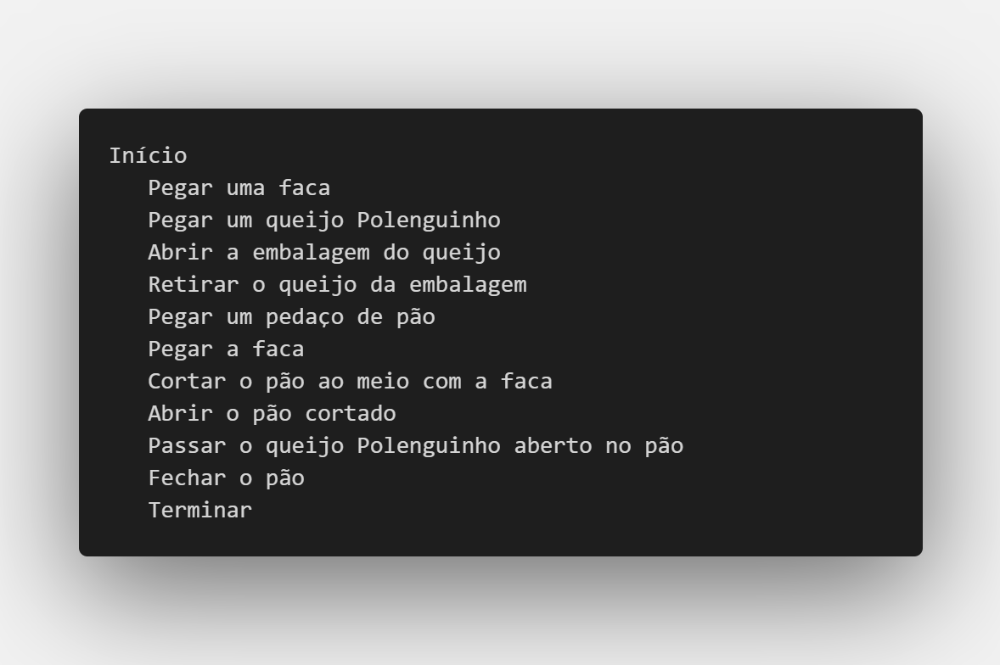

2/26 - Algorítimos
Algoritmos são sequências de instruções que resolvem problemas ou realizam tarefas de forma ordenada. Eles são fundamentais na programação e automatização de processos.
Exemplo:
Um algoritmo para descrever o processo de alguém abrindo um queijo Polenguinho e passando no pão pode ser assim:

Neste exemplo, o algoritmo descreve passo a passo as ações que alguém deve realizar para abrir o queijo Polenguinho e passá-lo no pão. Cada ação é ordenada de forma lógica, seguindo um fluxo específico. Isso ilustra como os algoritmos podem ser usados para representar processos simples do cotidiano de maneira estruturada e organizada.
Em caso de adicionarmos uma faca para cortar o pão e passar o queijo no pão:
